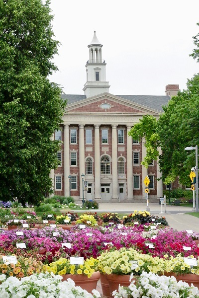

|  |
Founded in 1950, Charlize College began as a small institution with a bold vision: to provide high-quality education and foster academic excellence. Over the decades, it has grown into one of the most prestigious colleges in the country, renowned for its rigorous academic programs, innovative research, and commitment to student success.
From its inception, Charlize College has been dedicated to creating a nurturing and inclusive learning environment. The college was named after its visionary founder, Dr. Charlize M. Okonkwo, an esteemed educator and philanthropist who believed in the transformative power of education. Dr. Okonkwo's passion for learning and her commitment to social progress laid the foundation for what would become a beacon of higher education.
Throughout the 1960s and 1970s, Charlize College expanded its academic offerings and campus facilities, attracting talented faculty and ambitious students. The college's emphasis on a liberal arts education, combined with professional and technical programs, positioned it as a leader in innovative teaching and research. By the 1980s, Charlize College had established itself as a hub for intellectual and cultural exchange, fostering a vibrant academic community.
Today, Charlize College is celebrated for its exceptional faculty, cutting-edge facilities, and a diverse student population that hails from over 50 countries.
Mission Statement
"To provide a transformative education that fosters academic excellence, nurtures a diverse and inclusive community, and empowers students to make meaningful contributions to society."
Vision Statement
"To be a global leader in higher education, renowned for innovative teaching, cutting-edge research, and a commitment to social responsibility." |